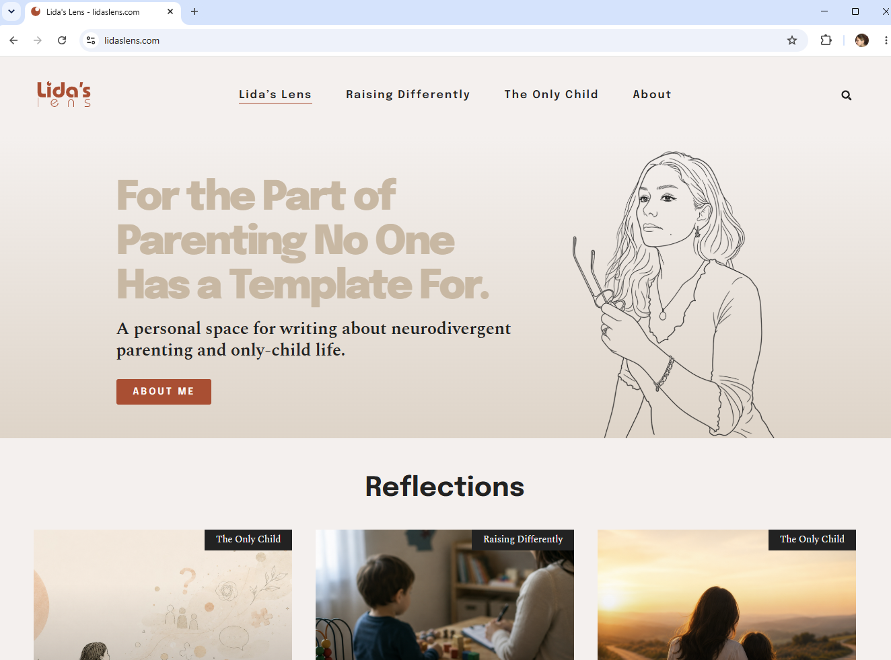

Lida’s Lens / Ongoing project
End-to-End Digital Analytics & MarTech Implementation on lidaslens.com
I built a live content website and connected its measurement, consent and CRM systems. The project continues through SEO/GEO development, AI-assisted exploration and planned acquisition.
Visit lidaslens.com
Open the live website ↗01Executive Overview
A live project connecting content, measurement and digital marketing.
Lida’s Lens is my parenting-content website, focused on Autism Level 1, raising differently and only-child family life. I created the posts and built the connected analytics and MarTech implementation around the site.
The project brings together measurement strategy, consent-aware tracking, SEO and GEO, behavioral analytics, CRM and automation. It also gives me a practical environment for exploring AI-assisted tools and planning acquisition and experimentation.
The website and core stack are live. Content publishing has been intermittent, search visibility and traffic remain limited, and Meta campaigns have not launched. The next phase is to develop publishing and acquisition together, then use the resulting readership data to guide analysis and optimization.
Current scope
IMPLEMENTEDGTM, GA4, custom dataLayer, CookieYes, Advanced Consent Mode v2, HubSpot CRM, Make automation, Meta Pixel, Microsoft Clarity, Contentsquare/Hotjar, Search Console, Rank Math, WP Statistics and GA4-to-BigQuery export.
DEVELOPINGSEO/GEO, content development, the measurement plan, GTM/dataLayer review, data quality and the approach to analyzing reader behavior.
EXPLOREDAI-assisted inspection through Stape and Pipedream MCP integrations, including their practical limitations.
PLANNEDRegular publishing alongside Meta acquisition, AI-search visibility monitoring, CRM email workflows, SQL analysis, CRO experiments, server-side GTM and Meta Conversions API.
Architecture overview
The schematic shows how the current implementation connects, where I am developing the project, and how the planned additions extend it.
From content to insight and activation
- Implemented
- Developing
- Explored
- Planned
Content, SEO & GEO
DevelopingPublished articles + ongoing search optimization
Search & AI discovery Website visits
Search Console · Rank Math · GA4
AI mentions, citations and referral analysis: planned.
Meta acquisition
PlannedFacebook Page + signup route already live
Follower / traffic campaigns Website visits
Campaigns have not launched. Meta Pixel is implemented in the measurement layer below.
Lida’s Lens website
Articles · Reader journeys · Newsletter & contact forms
Core implementation in place · Content and readership still developing
Website behavior Measurement
Consent + page context
ImplementedCookieYes Advanced Consent Mode v2
Consent signals control Google-tag behavior. A custom dataLayer supplies article and page context.
Google Tag Manager
ImplementedTags · Triggers · Variables · Events
Measures article engagement, form conversions, sharing and navigation.
GTM deploys the measurement tags below
GA4 BigQuery
ImplementedEvent collection + export
SQL-derived metrics: planned
Behavioral analytics
ImplementedMicrosoft Clarity
Contentsquare / Hotjar
Analysis develops with readership.
Meta Pixel
ImplementedBrowser-side advertising measurement
Website forms CRM
Contact & subscriber flow
Implemented- Website forms
- Webhook
- Make
- HubSpot CRM
Form data follows this direct route. GTM measures the form events separately.
CookieYes Custom HubSpot consent bridge
Lifecycle activation
PlannedSegmentation Email workflows Engagement analysis
Review across the measurement setup
MCP exploredGTM Preview / Tag Assistant · GA4 DebugView · Browser and consent checks
AI assistant Stape / Pipedream MCP integrations Platform configuration and data
MCP trials are a separate review activity. Suggested findings are checked against the configuration and direct observations.
Analysis & experimentation
PlannedGA4 + behavioral findings Hypothesis VWO / Convert Evaluation
Develop as content, traffic and useful observations grow.
Server-side measurement
PlannedWebsite measurement Server-side GTM Meta Conversions API
A future extension of the measurement architecture.
02Business & Measurement Strategy
Implemented / Developing
Business context
The intended reader journey is discovery, meaningful reading, exploration of related content, returning visits and, eventually, a subscription or direct contact.
I designed the measurement approach around engaged readership growth. This connects acquisition quality to how people actually use the content and whether an ongoing relationship develops.
Observable actions and derived measures
Core signals include:
page_viewarticle_engagementgenerate_leadcontact_submitsharecategory_clickA custom dataLayer adds page and article context. The current deep-reading definition combines at least 45 seconds of visible-page time with 60% article scroll depth.
These collected actions provide inputs for the broader measurement plan. Metrics that need session-level or user-level analysis are intended for GA4 reporting or BigQuery/SQL as enough useful data becomes available.
| Business question | Measure | Source / development stage |
|---|---|---|
| Are visitors reading meaningfully? | Article engagement rate | GTM + GA4 implementation |
| Are readers exploring and returning? | Multi-article sessions; returning engaged readers | GA4 → BigQuery / SQL analysis planned |
| Is search attracting relevant readers? | Search visibility, organic engagement and subscriptions | Search Console + GA4 |
| Does the site appear in AI answers? | Mentions, linked citations and page visibility | AI-search monitoring planned |
| Do identifiable AI referrals become readers? | Referral visits, article engagement and subscriptions | GA4 analysis planned |
| Is readership becoming an owned audience? | Subscriber conversion rate | GA4 + HubSpot |
| Are visitors initiating contact? | Contact submission rate | GA4 |
| Is meaningful readership growing? | Engaged readership growth over time | Longer-term analysis as publishing and acquisition develop |
At the current traffic level, the framework establishes what to observe and how to connect it to decisions. More active publishing and acquisition will make those analyses more informative.
03Privacy & Consent
Implemented
Consent implementation and troubleshooting
The first implementation used the free version of Complianz with GTM Custom HTML logic to update Google Advanced Consent Mode v2.
During validation, I found that Complianz events including cmplz_event_marketing and cmplz_event_statistics triggered the same update logic. Both ad_storage and analytics_storage were being granted together, instead of preserving the intended distinction between advertising and analytics consent.
Migration to CookieYes
I migrated the setup to CookieYes CMP and validated the resulting consent states with GTM Preview/Tag Assistant and browser-level checks.
Keeping the Complianz banner and handling Consent Mode separately through Simo Ahava’s GTM template was another option I explored. CookieYes offered a more straightforward fit for this implementation.
HubSpot consent handling
HubSpot needed its own consent handling alongside the Google-tag implementation. A custom bridge in the website header connects the site’s consent choices to HubSpot behavior.
The resulting setup combines Advanced Consent Mode v2 for Google tags with the separate HubSpot bridge. Consent choices are part of the validation process whenever the relevant configuration changes.
04Data Collection & Tracking Architecture
Implemented / Developing
Centralized tag deployment
Google Tag Manager is the central deployment layer for most browser-side analytics and marketing tags. It brings tags, triggers, variables and event logic into one place for inspection and maintenance.
WordPress plugins are used selectively for platform-specific functions, including CookieYes and HubSpot.
Custom page-context dataLayer
I added a custom dataLayer to provide structured context such as author, post slug and other content attributes. The same context can be reused across measurement tags and events.
This gives the implementation a consistent way to describe the content being viewed and supports analysis across articles and content categories.
Event architecture
GA4 receives standard measurement and custom behavioral events through GTM. Article reading, newsletter signups, contact submissions, sharing and category navigation have distinct roles in the measurement plan.
Newsletter signup uses generate_lead; direct contact uses contact_submit. More complex questions, such as repeat engaged readership, are reserved for analytical work on the collected data.
Connected platforms and ongoing review
The container also deploys Meta Pixel, Microsoft Clarity and Contentsquare/Hotjar. GA4 exports event-level data to BigQuery.
Ongoing review covers naming consistency, trigger conditions, event parameters, duplication risk and the usefulness of the data being collected. The aim is a measurement setup that remains understandable as the project expands.
05Data Quality, Validation & AI Exploration
Direct validation in use / MCP integrations explored
Manual inspection and direct testing
I use GTM Preview/Tag Assistant to inspect firing conditions, event order, variables and dataLayer values. GA4 DebugView and Realtime help confirm that expected events and parameters arrive.
Browser and network inspection support checks of form behavior and consent choices. Testing different consent states was what exposed the original Complianz issue and informed the migration.
The review also includes event duplication, internal-traffic handling and whether the implementation still matches the measurement plan.
Experimenting with AI and MCP integrations
I have tried Stape and Pipedream MCP integrations to explore AI-assisted inspection of the measurement setup. MCP, or Model Context Protocol, connects an AI assistant with external tools and platform data.
These were practical experiments with a developing way of working. The responses were inconsistent and included incorrect suggestions, particularly during the Stape trial. I check suggestions against the actual configuration and observed behavior, and continue to rely on direct validation for conclusions.
The area remains useful to explore for reviewing configurations, querying data and reducing repetitive inspection. These trials form part of my continuing experimentation with AI-assisted tools and evaluation of their practical usefulness.
Using AI in the wider project
AI also supports my learning, coding and troubleshooting. I use it to work through unfamiliar concepts and possible implementations, then make decisions about how those ideas fit the website and its connected systems.
06Data Activation & CRM
Form integration implemented / Lifecycle automation planned
Connecting forms to CRM
Website forms connect to HubSpot through a webhook and Make automation:
I connected this flow to support newsletter signups and contact submissions. Form data follows this route directly, while GTM records the corresponding measurement events separately.
Different relationships, different signals
Newsletter signupgenerate_lead
The start of a subscriber relationship and an input to audience development.
Contact submissioncontact_submit
A direct inquiry with a different intent from subscribing.
A content-interest field is collected to support future segmentation. This connects the reader’s interests to how the CRM could eventually support more relevant communication.
Planned activation
The next CRM layer is segmentation, HubSpot email workflows and analysis of subsequent engagement. These capabilities are planned as the subscriber base develops.
07SEO, GEO & Traffic Acquisition
SEO/GEO developing / Meta campaigns planned
Content and acquisition development
I created the published articles and am working on enhancing their SEO and GEO. The intended growth approach combines regular publishing with Meta acquisition, followed by analysis of how those audiences read, explore and subscribe.
Recent development has focused on implementation and further learning. Publishing has been intermittent, organic visibility remains limited and Meta campaigns have not started. Building up content and acquisition together is the next development stage.
SEO: discoverability and relevant readership
Google Search Console, Rank Math and GA4 support the current organic-search work. Search Console provides visibility into impressions, clicks, CTR and query/page performance; GA4 connects arriving visitors with their on-site behavior.
The development focus is search intent, clearer article structure and metadata, internal linking between relevant posts, and reviewing crawling and indexing. This links editorial decisions and technical SEO to the questions the site’s readers are trying to answer.
The measurement approach connects search visibility with article engagement, further reading and subscriptions as enough data becomes available.
GEO and visibility in AI search
Generative engine optimization (GEO) extends the discovery work to AI-generated answers and recommendations, including services such as ChatGPT, Google’s AI search experiences and Copilot.
The direction is to make the site’s original perspective, subject focus and supporting information clear and accessible. This builds on the SEO work and the value of the articles themselves.
Planned monitoring will distinguish mentions of Lida’s Lens, linked citations to its articles and identifiable visits from AI services. Native reporting such as Google’s Generative AI performance report and Bing AI Performance, where sufficient data is available, can support that work alongside a repeatable sample of relevant searches.
Any attributable visits can then be assessed using the same engagement and subscription measures as other acquisition sources. Monitoring and reporting will develop alongside the site’s content and acquisition activity.
Meta acquisition
The Facebook Page, Meta Pixel and a dedicated Facebook signup route are implemented. Follower and traffic campaigns remain planned.
The intended sequence is follower acquisition, traffic acquisition and analysis of on-site engagement. Alongside campaign measures such as CPC, the plan is to examine engaged-reader rate, subscriptions and, where meaningful, cost per engaged reader.
Results from active publishing and campaigns will guide later changes to content, landing experiences and acquisition decisions.
08User Behaviour Analysis
Tools implemented / Analysis developing
Connecting events with page behavior
GA4 provides the quantitative view of actions and outcomes. Microsoft Clarity and Contentsquare/Hotjar add heatmaps, session recordings, click and scroll behavior, and potential signs of friction.
The tools are connected to the live site. With traffic still low, the current emphasis is learning how to inspect behavior and building the approach for more substantial analysis as readership grows.
Comparing behavioral tools
I am exploring both Clarity and Contentsquare/Hotjar to understand their practical strengths on the same website: heatmaps, recordings, navigation patterns and usefulness for developing improvement ideas.
Experience with both will inform which platform best fits the project over time.
From observation to a possible change
Areas to investigate include whether readers reach the main content, discover related articles, notice subscription opportunities or encounter problems with forms. These observations will feed the optimization work as enough relevant sessions become available.
09Conversion Optimization & Experimentation
Planned
Connecting analysis to changes
The optimization plan connects acquisition, event measurement and behavioral observations with decisions about the reading and subscription experience.
Potential areas include article layouts, related-content navigation, signup placement and campaign landing experiences. Specific changes will be guided by what readers do on the site.
Experimentation platforms
VWO and Convert are the current candidates for formal experimentation. Their trials have not been activated. The plan is to explore them when a suitable hypothesis and enough relevant traffic make testing useful.
At this stage, the project establishes how the existing systems can support future CRO work. Experiment results and subsequent decisions can be added as that work takes place.
10Advanced Analytics & Measurement Architecture
BigQuery export implemented / Advanced work planned
From event collection to SQL analysis
GA4 event-level data is already exported to BigQuery. SQL analysis is a planned extension, with the export providing a foundation for questions that go beyond individual event counts.
Planned analyses include multi-article sessions, returning engaged readers, acquisition quality across sources and engaged readership growth over time. AI referral sources can be included where attribution and data volume support a useful comparison.
Server-side measurement
Server-side GTM and Meta Conversions API are planned as later additions to the measurement architecture. This will extend the existing browser-side setup and provide another area for practical implementation and evaluation.
How the project develops
I am building this as an evolving environment for connecting digital marketing and analytics skills: publishing content, improving discovery, acquiring readers, understanding behavior and developing relevant follow-up.
The current implementation, ongoing improvements and tool experiments form the starting point. As publishing and acquisition become more active, the page can grow with the analyses, decisions and outcomes that follow.